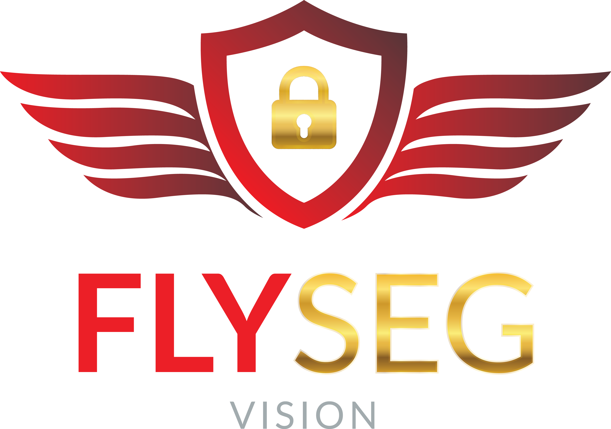

Totem · Box · EyeOlho de Lince · ODL.camera
Segurança inteligente e amiga do meio ambiente
Mais que câmeras: o Totem Olho de Lince junta câmeras Full HD, sirene, giroflex e um botão de emergência no app, ligados à plataforma MWL.camera e ao painel das forças de segurança da região.
Pare de apenas gravar. Comece a proteger!

Três modelos, uma rede
360°
Totem
Poste de aço na calçada, com quatro câmeras, sirene, giroflex e LED.
180°
Box
Na fachada do imóvel, com duas câmeras, sirene, giroflex e LED.
1 lente
Eye
Uma câmera olho de peixe (fisheye) acima do portão. Instalação simples, tomada 127V. Sem sirene e giroflex.
O que vem no Totem e no Box
📹
Câmeras Full HDImagens claras e coloridas, inclusive à noite.
🚨
Sirene e giroflexSirene de cerca de 120 dB e luz de alerta integradas.
💾
Gravação de 7 diasAs imagens ficam guardadas para consultar quando precisar.
💡
Iluminação LEDAcende sozinha à noite e economiza energia.
🎙️
Áudio do ambienteCapta o som da rua e da calçada (também no Eye).
🔋
Bateria opcionalAté 1h20 sem energia. No Eye, pela versão com nobreak.
Na emergência, ajuda imediata
1Pelo app, você aperta o botão de emergência, de onde estiver.
2O Totem ou o Box dispara a sirene e o giroflex na hora.
3O alerta abre uma ocorrência na plataforma MWL.camera.
4As forças cadastradas veem as imagens dos 30 segundos anteriores ao alerta.
Painel das forças de segurançaOs comandos de área das polícias civil e militar e da guarda municipal se cadastram sem custo e, após aprovação, acompanham as ocorrências da região.
Olho de Lince (ODL.camera) · FlySeg Vision, uma empresa do Ecossistema FlyGroup1/2